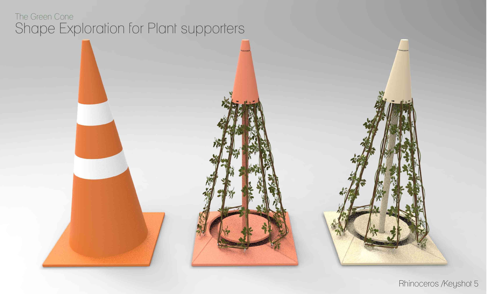
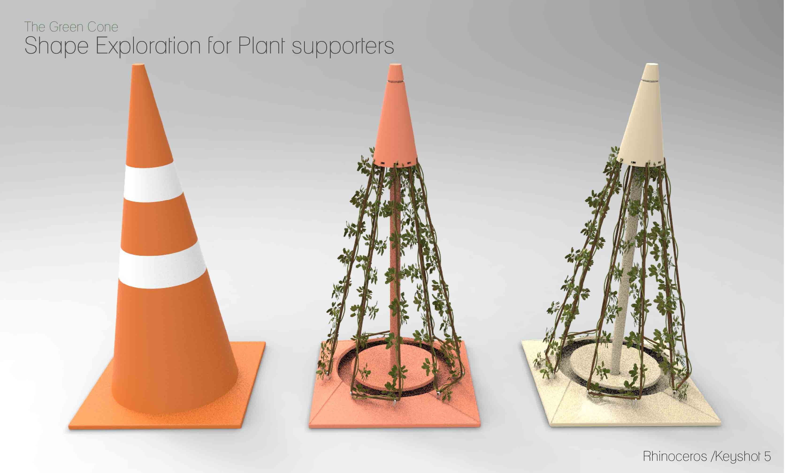
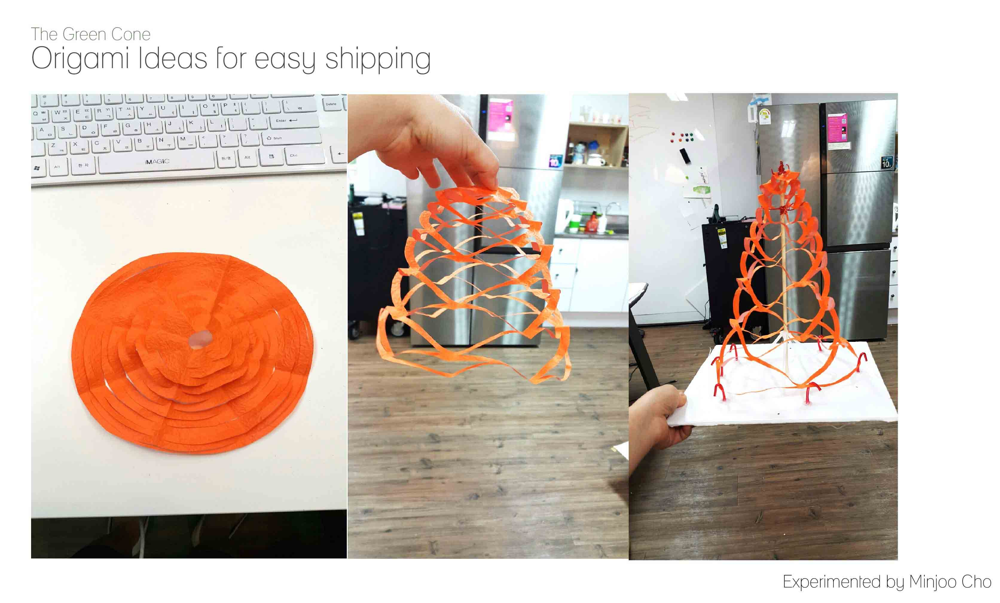
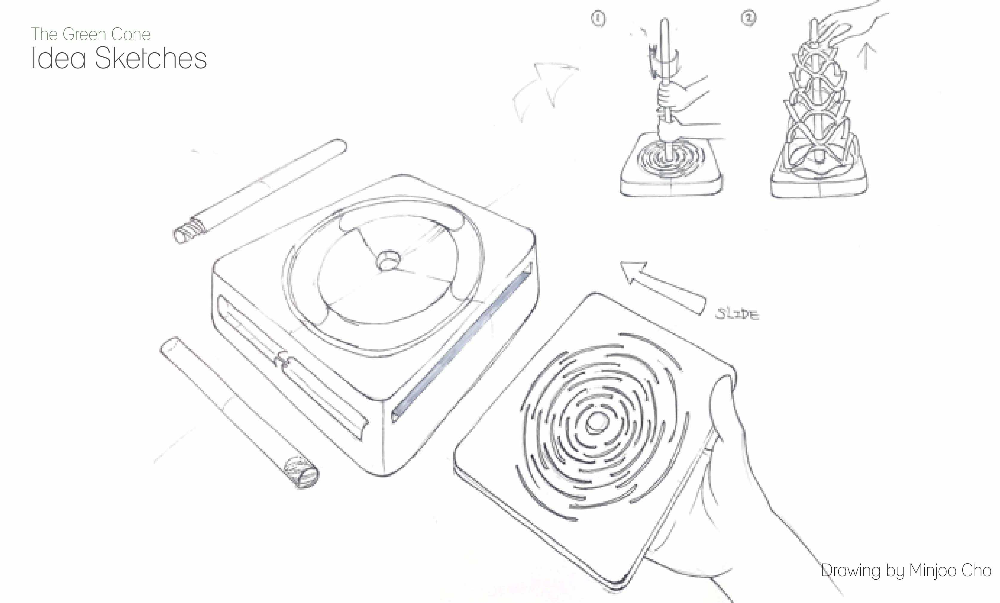
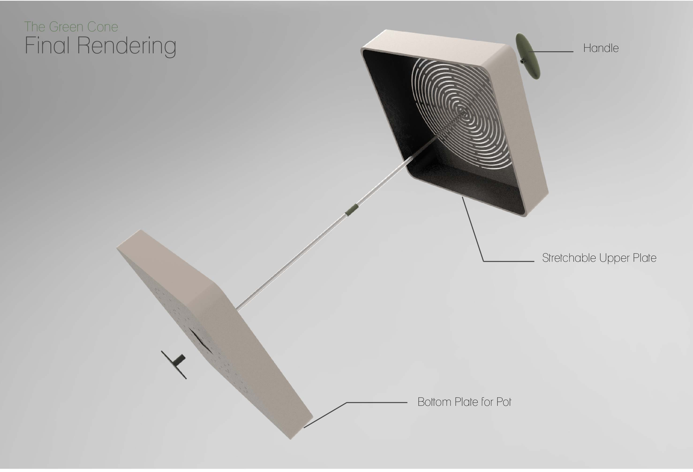
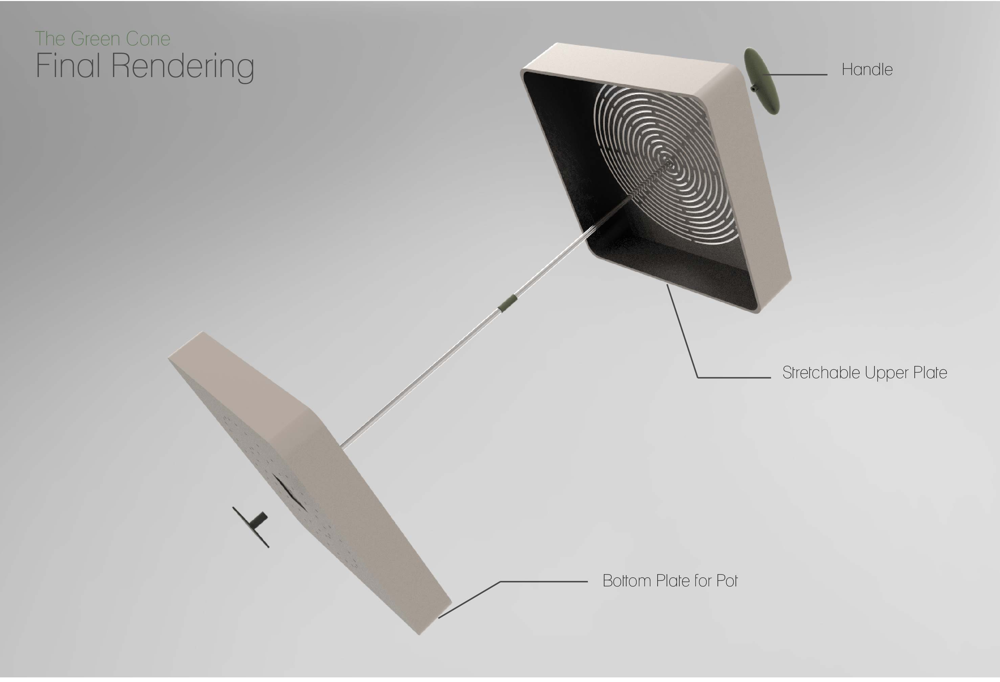

Greenly Warning
- Date:2016
- Category:Product Design
- Tags:Design Storytelling, Product Design
Backgrounds
The aim of this project was to Redesigning Vernacular Products in Korea. I focused on a Traffic Cone commenly seen on street

Problems
We can easily find orange traffic cones broken all over the street though those are made to prevent drivers from disobeying rules. As people are too used to the conventional traffic cones, it seems the cones are failing meet their original functions.
What if there is LIFE inside?


Inspirations
The Green Cone is differentiated with conventional orange traffic cones with orange shape, in that it has a POT PART to grow ivy inside. As time goes by, the ivy grows onto the wires of the cones and finally covers the whole body.In a such way, people will be more wary of keeping the sign, with a common feeling of admiration over life.
 


Design for Flat Shipping
The Green Cone proposes Flat Design for easy shipping inspired by origami net DIY Methods after few trials. Insipired Origami Ideas of making paper nets, I applied the idea to circular shape to build a cone shape. The final design, thus , only needed one box shape for pots with numbers of modular poles to sustain the shape.
 Final Renderings & Instructions
Rendering Images of Traffic Cones
3D Modeled with Autodesk Inventor / Rendered with Keyshot
Gallery
 


Final Prototype
Final Prototype in the real environment